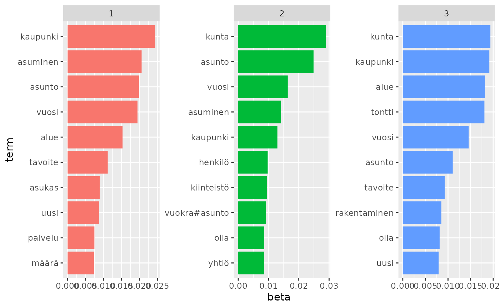
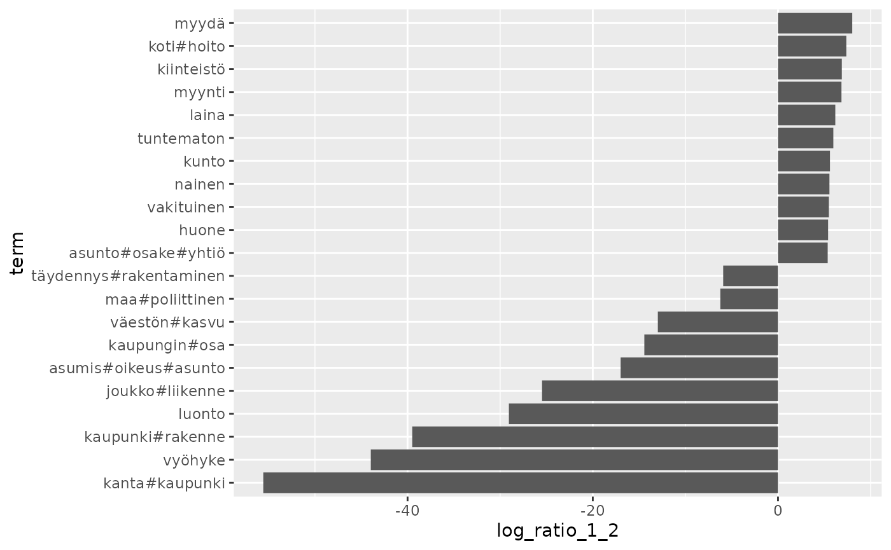
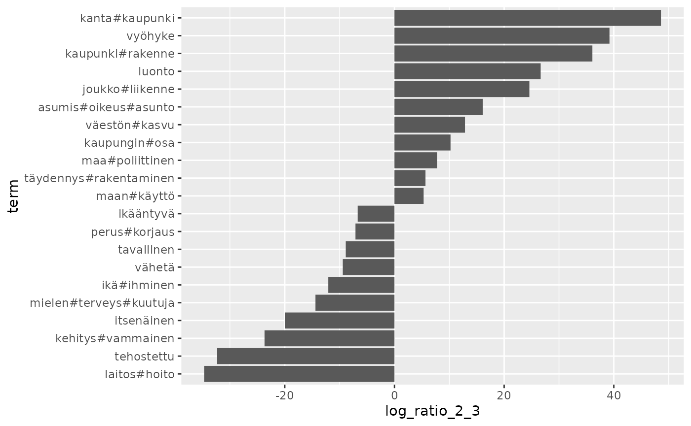
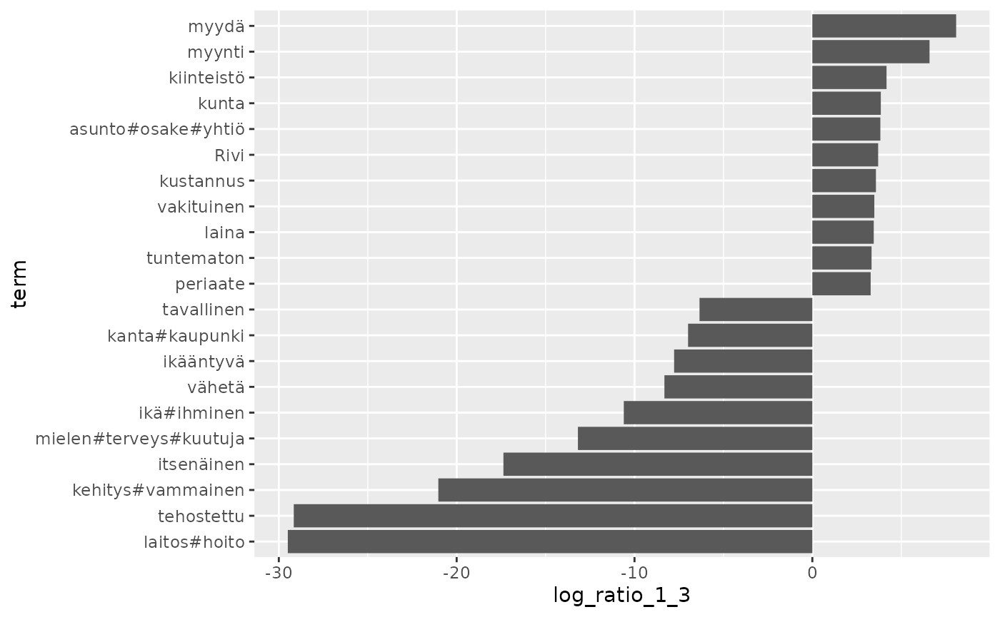
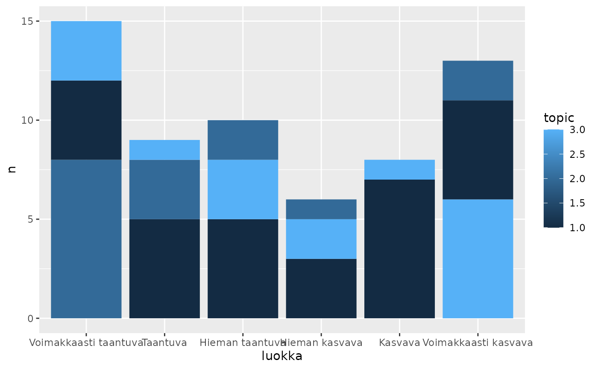

library(rfintext)
library(rfinstats)
library(quanteda)
library(topicmodels)
library(tidytext)
library(dplyr)
library(tidyr)
library(ggplot2)
tf
#> Document-feature matrix of: 61 documents, 4,859 features (82.43% sparse) and 2 docvars.
#> features
#> docs 1900#luku 1970#luku 198 1980#luku 1990#luku
#> Enontekiö 0.000640615 6.406150e-04 0.000640615 0.0012812300 0.0012812300
#> Espoo 0 1.924928e-04 0 0.0001924928 0
#> Eura 0 0 0 0 0
#> Hattula 0 0 0 0.0010395010 0
#> Helsinki 0 9.532888e-05 0 0 0.0001906578
#> Huittinen 0 0 0 0 0.0003376097
#> features
#> docs 2000#luku 75#vuotias A#talo Vapaa#aika aiheuttaa
#> Enontekiö 0.0006406150 1.921845e-03 0.0019218450 0.000640615 0.0019218450
#> Espoo 0.0001924928 0 0 0 0.0001924928
#> Eura 0 1.879699e-03 0 0 0.0006265664
#> Hattula 0 0 0 0 0
#> Helsinki 0.0012392755 9.532888e-05 0 0 0.0002859867
#> Huittinen 0 3.376097e-04 0.0006752194 0 0
#> [ reached max_ndoc ... 55 more documents, reached max_nfeat ... 4,849 more features ]
topfeatures(tc)
#> kaupunki asunto vuosi asuminen alue kunta tavoite uusi
#> 4054 3693 3462 3011 2737 2416 1824 1467
#> olla osa
#> 1424 1362
topfeatures(tf)
#> asunto kunta vuosi kaupunki asuminen alue tavoite olla
#> 1.2481903 1.2375388 1.0487321 1.0280334 0.9795687 0.7443542 0.5217526 0.4403415
#> uusi tulla
#> 0.4325931 0.3808686
topfeatures(tf_idf)
#> kaupunki kanta#kaupunki asunto#ohjelma asunto#kunta
#> 0.26505694 0.12979280 0.10464270 0.08189806
#> asunto#osake luokitus asunto#poliittinen kiinteistö
#> 0.07350136 0.07197164 0.07005351 0.06970604
#> huone vuokra#talo
#> 0.06667660 0.06304699
named_vec2df <- function(vec) {
nms <- names(vec)
vls <- vec
# var = deparse(substitute(vec))
var = enexpr(vec)
tibble(term = nms, value = vls, type = var)
}
bind_rows(
lapply(list(tc, tf, tf_idf), function(x) {
# enexpr(x)
named_vec2df(topfeatures(x))
})
)
#> # A tibble: 30 × 3
#> term value type
#> <chr> <dbl> <dbl>
#> 1 kaupunki 4054 4054
#> 2 asunto 3693 3693
#> 3 vuosi 3462 3462
#> 4 asuminen 3011 3011
#> 5 alue 2737 2737
#> 6 kunta 2416 2416
#> 7 tavoite 1824 1824
#> 8 uusi 1467 1467
#> 9 olla 1424 1424
#> 10 osa 1362 1362
#> # ℹ 20 more rows
k_size = 3LCan’t convert tf or tf_idf to tm format.
LDA() raises error. Conversion calculates term frequency
automatically? Therefore calculating term frequency of term
frequencies?
aspol_lda
#> A LDA_VEM topic model with 3 topics.
aspol_topics <- tidy(aspol_lda, matrix = "beta")
aspol_top_terms <- aspol_topics %>%
group_by(topic) %>%
slice_max(beta, n = 10) %>%
ungroup() %>%
arrange(topic, -beta)
aspol_top_terms %>%
mutate(term = reorder_within(term, beta, topic)) %>%
ggplot(aes(beta, term, fill = factor(topic))) +
geom_col(show.legend = FALSE) +
facet_wrap(~ topic, scales = "free") +
scale_y_reordered()
beta_wide <- aspol_topics %>%
mutate(topic = paste0("topic", topic)) %>%
pivot_wider(names_from = topic, values_from = beta) %>%
filter(topic1 > .001 | topic2 > .001) %>%
mutate(log_ratio_1_2 = log2(topic2 / topic1),
log_ratio_2_3 = log2(topic3 / topic2),
log_ratio_1_3 = log2(topic3 / topic1))
beta_wide
#> # A tibble: 288 × 7
#> term topic1 topic2 topic3 log_ratio_1_2 log_ratio_2_3 log_ratio_1_3
#> <chr> <dbl> <dbl> <dbl> <dbl> <dbl> <dbl>
#> 1 aika 3.08e-3 2.47e-3 4.08e-3 -0.316 0.722 0.406
#> 2 alue 1.53e-2 5.16e-3 1.82e-2 -1.57 1.82 0.248
#> 3 antaa 6.60e-4 1.80e-3 1.38e-3 1.45 -0.387 1.06
#> 4 arvioida 1.35e-3 1.50e-3 9.96e-4 0.151 -0.588 -0.437
#> 5 asettaa 1.14e-3 1.43e-3 1.80e-3 0.333 0.327 0.660
#> 6 asia 1.19e-3 1.12e-3 5.45e-4 -0.0878 -1.04 -1.13
#> 7 asiakas 6.09e-4 2.94e-3 1.26e-4 2.27 -4.54 -2.27
#> 8 asua 6.12e-3 4.77e-3 6.61e-4 -0.360 -2.85 -3.21
#> 9 asuais#pal… 5.09e-4 1.63e-3 3.48e-5 1.68 -5.55 -3.87
#> 10 asuin#alue 4.03e-3 3.05e-4 2.83e-3 -3.72 3.21 -0.511
#> # ℹ 278 more rows
plot_log_ratios <- function(log_ratio) {
beta_wide |>
arrange({{log_ratio}}) |>
mutate(term = reorder(term, {{log_ratio}})) |>
slice(1:10, (n()-10):n()) |>
ggplot() +
geom_col(aes(x = {{log_ratio}}, y = term))
}
plot_log_ratios(log_ratio_1_2)
plot_log_ratios(log_ratio_2_3)
plot_log_ratios(log_ratio_1_3)
aspol_documents <- tidy(aspol_lda, matrix = "gamma")
aspol_documents |>
slice_max(order_by = gamma, n = 1, by = document) |>
left_join(taantuvat, by = join_by(document == kunta)) |>
count(topic, luokka, sort = TRUE) |>
ggplot() +
geom_col(aes(x = luokka, y = n, fill = topic))